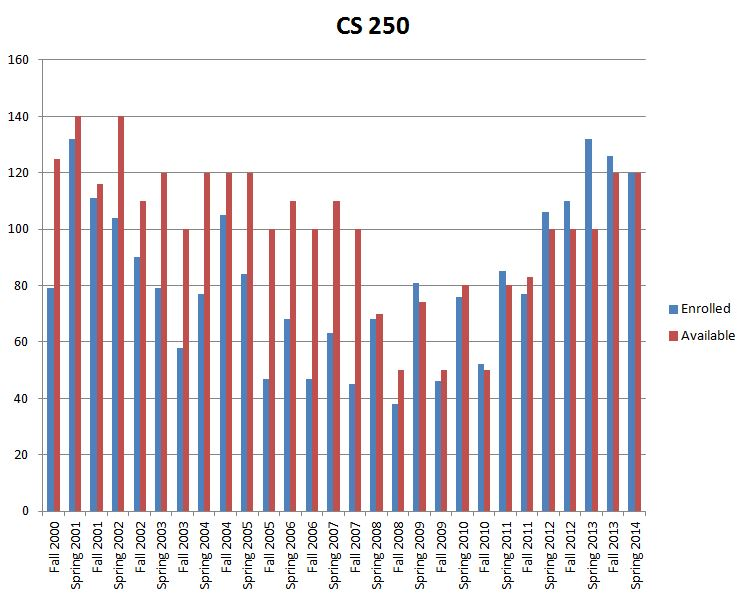

The current class enrollment system is insufficient for handling course overflows.
The current course sign up system results in excess student communication with faculty in order to facilitate the student's desire to be enrolled in a specific course when it is full. While the student and faculty body are attempting to resolve this issue, they are taken away from their other tasks. Implementing a wait list feature to the current working course add/drop system will greatly reduce the number of these avoidable communications.
This graph shows that throughout the years CS250 has stayed close if not full. If you look at Spring 2013, the amount enrolled (blue) is higher than the amound available (red). This is a perfect example of why we need a program to handle our "waitlist" issue.
| Schools | Management System |
|---|---|
| Old Dominion University | LeoOnline/Banner |
| University of Michigan Ann Arbor | Wolverine Access |
| Spokane Community College | myBigfoot |
| Princeton University | SCORE |
| Mount Holyoke College | ISIS |
| The University of Texas at Austin | UT EID |
| San Bernardino Valley College | WebAdvisor |
| University of California Irvine | WebReg |
| Tulane University | Gibson Online |
| Emerson College | eCommon |
| The University of Alabama | myBama |
| Rice University | ESTHER |
| Community College of Rhode Island | MyCCRI |
| Ohio State University | Buckeye Link |
| Johns Hopkins University | ISIS |
| Skagit Valley College | mySVC |
| University College, University of Denver | webCentral |
| Hampshire College | TheHub |
| University of Pittsburgh | PeopleSoft |
| Carnegie Mellon University | TheHub |
| SUNY Plattburgh | MyPlattsburgh |
| Columbia | Student Services Online |
| Northern Virginia Community College | MyNOVA |
| * Brown University | Banner |
| University of Virginia | Student Information System |
| Santa Barbara City College | Pipeline |
| The University of Maine | MaineStreet |
| Henry Ford Community College | WebAdvisor |
| The University of North Carolina | MyUNC |
| * Auburn University | Banner |
| Fullerton College | myGateway |
| Stanford University | Axess |
| Duke University | ACES |
| College of Western Idaho | myCWI |
| Northwestern University | CAESAR |
| Baruch College (CUNY) | e-SIMS |
| University of Wisconsin-Madison | My UW |
| Clemson University | iRoar |
| Salt Lake Community College | MyPage |
There are three "customers" that this solution will benefit.
One, of course, is the student body. This tool will take out the initial "panic factor" when a course has reached capacity. The other half of the customer base will be the faculty. Staff will receive some relief from the influx of emails, phone calls, and personal visits that relate to course availability. Finally, the University's administration suffers. Undergraduate Admissions must also deal with the panic'd students when a course becomes full.
Many universities use some form of waitlist to help their students enroll in classes. The problem with their waitlist is the effectiveness of them. Waitlist will cause more problems for certain classes, such as classes with labs and recitation. Many students struggle getting into their classes due to a capacity. This may cause problems for students attempting to graduate. When classes hit capacity, students are forced to contact their advisor or the teacher of their desired classed. If a class that is highly desired reaches capacity, the advisor and teacher will be forced to take extra time to help all the students in need. This causes stress on both parties. A perfected waitlist can save both time and money for the students and faculty members.
Implement a wait list for students wishing to take Computer Science courses with x number of spots (with x to be determined). A student who wishes to register for a closed course will add their relevant information to the wait list program. If a spot opens up in a closed course, the program will start with the first person on the wait list and move down the list; if no matches are found, nothing happens. If, however, there are matches, the first three matching students on the list are notified of the opening, and the first to register gets the course. The other two students have a given amount of time to request they be kept on the wait list, and the everyone moves up the list as need be.
{kind=link}
{kind=link}